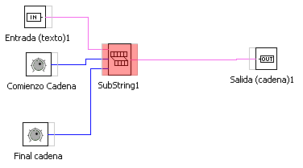
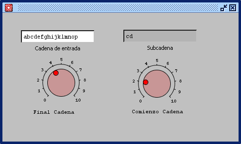

Operaciones con Cadenas de Caracteres: SUBCADENA
Este operador recoge una cedan de caracteres y devuelve en la salida una subcadena establecida mediante los valores Comienzo y Final de sucadena.
En la figura se puede ver un ejemplo.
